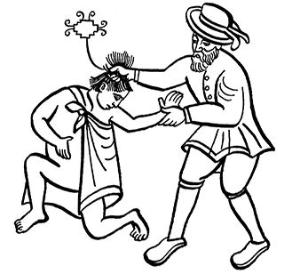
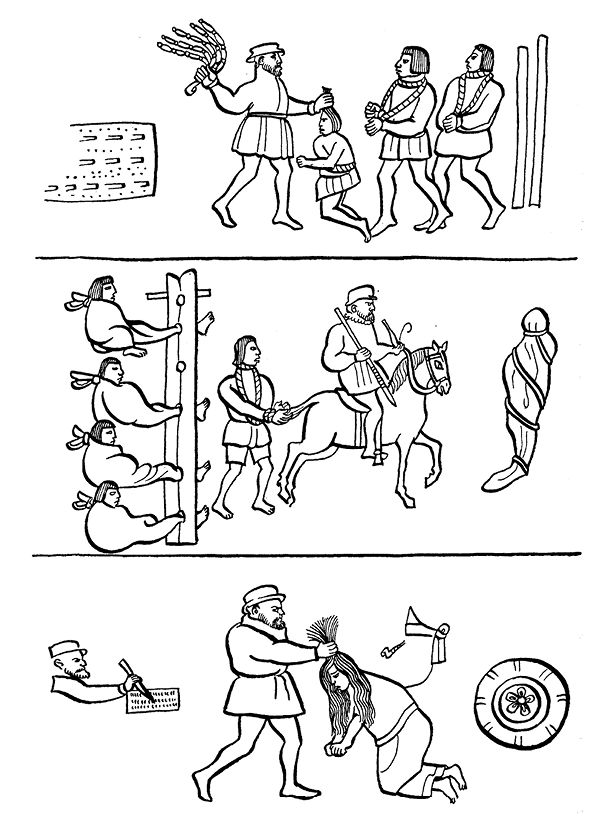

目录 |
第十五章 征服的悲歌
导 言
《战败者的见闻》如今也成了一种诺库伊卡特尔，“挽歌”，即后科尔特斯时期的纳瓦诗人的作品，这是真正的挽歌。 下面第一首悲歌引自《墨西哥歌谣集》，此歌谣集大约成书于1523年。它痛苦地描述了墨西卡人的彻底失败。第二首更为打动人心，它选自1528年的印第安人手抄本，它令人痛心地表达了墨西哥-特诺奇蒂特兰被围时人们的状况。 最后一首，即第三首，是供表演的歌剧诗，从征服者到达特诺奇蒂特兰开始描述直至墨西卡人的最后失败。这里只选取了最能表达悲痛的最后部分。这些诗歌比其他实证更能雄辩地表达出失败在被征服者心灵上留下的巨大伤痕，用卡里巴依的话来说，这些是征服所造成的最初精神创伤。
墨西卡人的失败
在特拉特洛尔克墨西哥人泪如雨下，他们不断在奔走呼号。 有的人跳到水里离开故乡； 妇女也和男人一样跳进水里。全体人民在大逃亡。 我们能逃到哪里去哟，朋友！这一切都是真的吗？ 都城狼烟四起，烟雾腾腾…… 我们不得不放弃自己的墨西哥都城。 莫德尔乌伊特辛 特拉克特辛 奥吉斯特辛1 他们哽咽着，相互慰藉…… 你们大声哭泣吧，我的朋友， 要知道一切事实都说明， 我们墨西哥民族失败了。 特拉特洛尔克的生命之神赐予的 食物早已腐败，饮水也变得腥酸！ 莫德尔乌伊特辛、特拉克特辛被无情地带走了， 啊！当他们在克尤阿坎受到拷打时， 其他人只好在阿卡奇南克用歌声相互慰藉……2 
特诺奇蒂特兰被围的最后几天
这一切都发生在我们自己身上。 是我们亲历目睹， 我们惊讶得瞠目结舌。 这种痛苦而又无助的命运 令我们焦虑不安。
大街上到处是被折断的投枪， 逝者的头发散落一地。 房屋已成断壁残垣， 墙壁被鲜血染成殷红。
在大街和广场上蛆虫到处蠕动， 人的脑浆洒在墙壁上。 河湖里流淌着血水， 我们不得不去喝 那充满硝石气味的带血液体。
我们焦虑地拍打着用土坯建造的墙壁， 墙上像网眼一样的弹痕是给我们留下的遗产。 我们用木板支撑着它， 但是，护板也不能使它孤独地长久屹立。
我们啃食着黄雀的骨殖， 咀嚼着浓烈硝石味的绊根草， 吞咽着土砖、蜥蜴、 老鼠、泥土、蛆虫……
我们把刚放在火上的 一点儿肉生食掉， 后面的肉刚烤好 就被别人在火旁抢食了。
我们每人都被标上了价格， 青年、祭司、孩子、姑娘 各有各价。
够了： 一个穷人的价格仅值两把玉米， 相当于十个掺杂了水虫的面饼。 我们自己也只值 二十个带硝石味的绊根草面饼。
黄金、玉石、精致毯子、 克查尔羽毛， 过去都很值钱的东西， 现在却无人问津……3
特诺奇蒂特兰人和特拉特洛尔克人的废墟
噢，特米洛特辛，快动手吧，去战斗吧， 西班牙人已经从他们的战船上下来， 在奇南巴4上的人也上了岸。
特诺奇蒂特兰已被战火包围， 特拉特洛尔克已被战火包围！
武器制造者克尤瓦瓦特辛已把道路封锁， 阿科尔瓦坎人只好从特佩亚克大道离开。
特诺奇蒂特兰已被战火包围， 特拉特洛尔克已被战火包围！
大火被浓烟包围； 炮弹在大火中炸裂， 烟雾在弥漫。 他们逮捕了瓜乌特莫克！ 墨西哥的王子们向他伸出手臂！
特诺奇蒂特兰已被战火包围， 特拉特洛尔克已被战火包围！5  战败者的命运（印第安档案）
监禁瓜乌特莫克
特诺奇蒂特兰已被战火包围， 特拉特洛尔克已被战火包围！
大火被浓烟包围； 炮弹在大火中炸裂， 烟雾在弥漫。
他们逮捕了瓜乌特莫克特辛， 墨西哥的王子们向他伸出手臂！
特诺奇蒂特兰已被战火包围， 特拉特洛尔克已被战火包围！
瓜乌特莫克特辛、克阿纳克奇特辛、特特莱潘科特萨尔特辛 三位国王成了奴隶 他们在严密看管下被押解到克尤阿坎。
特拉克特辛安慰他们： “我的子侄们，振作起来，要知道捆绑你们的链条是金制的， 你们虽然被俘，仍是国王。”
瓜乌特莫克辛答道： “噢！我的子侄6，你也被俘，还用铁链锁着！”
“你是谁？你为何坐在科尔特斯队长旁边？” “啊，你就是堂娜伊莎贝尔，我的小侄女！” “噢，的确，国王成了俘虏！”
“你将成为奴隶，属于另外一个人的了。” “在克尤阿坎项链将会铸好，克查尔羽毛会织成布。”
“你是谁？你为何坐在科尔特斯队长旁边？” “啊，你就是堂娜伊莎贝尔，我的小侄女！” “噢，的确，国王们成了俘虏！”7 |
|---|